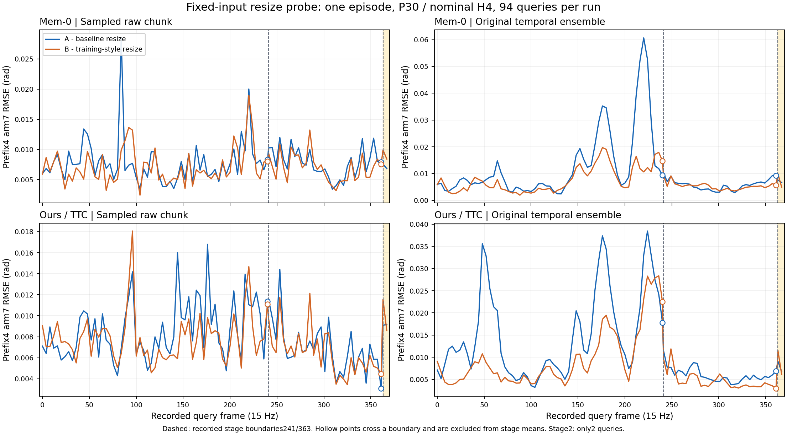

到底固定了什么
两方法均为原交付30k检查点；每组独立加载。A1/A2只验证当前固定输入下的重复性，不代表跨场景稳健性。
输入和历史保持一致
- 同一份实际随机噪声，相同query种子、实测状态、文本与历史时钟。每方法A1/A2输出、视觉与分类器记录逐值一致。
A/B只改变动作图像缩放
A 原部署 PIL默认双三次，640×480 RGB→224×224。
B 训练式 张量双线性＋抗锯齿→224×224，再转uint8截断；没有训练时随机颜色增强。
同一运行环境下的Qwen内部processor保持原样。B对齐的是已冻结的确定性训练缩放参考；不宣称历史训练库内核逐位一致。
原记录的三个完整子任务指令与关键帧
关键帧：98、122、155、210、273、295、335；阶段边界：241、363。来源是原Ours实际记录，不是人工GT，也不是本探针重新选择的阶段。
STAGEWISE ERROR · rad
分阶段动作误差
每个query先对名义前4步和指定关节维度计算RMSE，再取query间的算术均值。arm7与hand6分开统计；不是训练loss。每格左A、右B，完整精度见JSON。
归位stage2只有2个query。两方法的B在这一阶段arm误差均略高；不能用这个很小的片段推断完整归位能力。
| 方法 / 阶段 | query数 | 原始采样 arm7 A → B | 时间集成 arm7 A → B | 原始采样 hand6 A → B | 时间集成 hand6 A → B |
|---|
ALL94 QUERIES · 两方法分面
每个query的arm误差曲线


分类器：两种方法的影响不同
Mem-0：原分数也会变化
Mem-0共用缩放后的VLM特征。原分类器数学逻辑未改，但输入特征改变。
原判定阈值为0.5。stage1前两次阳性：A在355/356，B在354/355。这里的固定历史不会因此重选，不能推断自主切换时间相同。
Ours：独立原始分支逐值一致
368条原分类器记录A/B逐值相同，保留原0.975阈值与累计两次阳性FSM；没有覆盖或放宽FSM。
原触发帧：241、363。
边界分类行属于切换前的旧指令；随后动作观测用新指令。未来闭环图像若改变，分类分数仍可能改变。
为什么H4仍可能受长尾影响
预测P30、每次拟取前4步，并不意味着原时间集成只保留4步。旧chunk的远期行可以进入后续query的前4步。
query200 · 第30行
名义全局帧2298项等权均值
该旧项权重1/8query228 · 第2行
落入名义前4步
名义全局帧2298项等权均值
该旧项权重1/8query228 · 第2行
落入名义前4步
独审例：Mem-0该远期关节A/B差0.515681rad；后续query228第2行最终集成差0.064777rad。这是原算法的算术影响，不是“已证明抖动原因”。历史长度的额外离线计算不等于修复成功，也不改变本次只比较缩放的设置。
两次初始化U，单独保留
U不是模型失败F，也不算成功。旧面板的400条记录和48个U条目均未改写；本附录不增加、删改任何闭环S/F/U。
解释范围与来源
阶段表与科学边界JSON · 逐query误差JSON · 必要来源与独审SHA · 页面资源SHA清单
页面只包含派生数值、独立图和必要指纹；没有原始私有日志、模型权重、RGB/q原数组、凭据或外部脚本/CDN。
此前真实NN前缀实验视频
可返回查看同场景前缀干预S / 原NN对照F的完整视频。那是此前H8/P30实时前缀实验，不是本轮缩放后的视频，也不是本页的成功率证据。
查看此前S/F视频 →